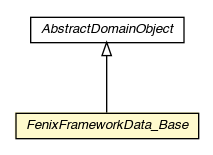

pt.ist.fenixframework.backend.jvstm.pstm
Class FenixFrameworkData_Base

java.lang.Object
 pt.ist.fenixframework.core.AbstractDomainObject
pt.ist.fenixframework.backend.jvstm.pstm.FenixFrameworkData_Base
pt.ist.fenixframework.core.AbstractDomainObject
pt.ist.fenixframework.backend.jvstm.pstm.FenixFrameworkData_Base
- All Implemented Interfaces:
- Serializable, DomainObject
public abstract class FenixFrameworkData_Base
- extends AbstractDomainObject
- See Also:
- Serialized Form
|
Field Summary |
static RoleMany<pt.ist.fenixframework.backend.jvstm.pstm.FenixFrameworkData,pt.ist.fenixframework.backend.jvstm.pstm.TransactionStatisticsEntry> |
role$$FFTxStatsLog
|
role$$FFTxStatsLog
public static final RoleMany<pt.ist.fenixframework.backend.jvstm.pstm.FenixFrameworkData,pt.ist.fenixframework.backend.jvstm.pstm.TransactionStatisticsEntry> role$$FFTxStatsLog
FenixFrameworkData_Base
protected FenixFrameworkData_Base()
getRelationFenixDataHasTransactionStatistics
public static DirectRelation<pt.ist.fenixframework.backend.jvstm.pstm.FenixFrameworkData,pt.ist.fenixframework.backend.jvstm.pstm.TransactionStatisticsEntry> getRelationFenixDataHasTransactionStatistics()
getFFTxStatsLogCount
public int getFFTxStatsLogCount()
hasAnyFFTxStatsLog
public boolean hasAnyFFTxStatsLog()
hasFFTxStatsLog
public boolean hasFFTxStatsLog(pt.ist.fenixframework.backend.jvstm.pstm.TransactionStatisticsEntry FFTxStatsLog)
getFFTxStatsLogSet
public Set<pt.ist.fenixframework.backend.jvstm.pstm.TransactionStatisticsEntry> getFFTxStatsLogSet()
addFFTxStatsLog
public void addFFTxStatsLog(pt.ist.fenixframework.backend.jvstm.pstm.TransactionStatisticsEntry FFTxStatsLog)
removeFFTxStatsLog
public void removeFFTxStatsLog(pt.ist.fenixframework.backend.jvstm.pstm.TransactionStatisticsEntry FFTxStatsLog)
getFFTxStatsLog
public Set<pt.ist.fenixframework.backend.jvstm.pstm.TransactionStatisticsEntry> getFFTxStatsLog()
getFFTxStatsLogIterator
public Iterator<pt.ist.fenixframework.backend.jvstm.pstm.TransactionStatisticsEntry> getFFTxStatsLogIterator()
Copyright © 2013. All Rights Reserved.